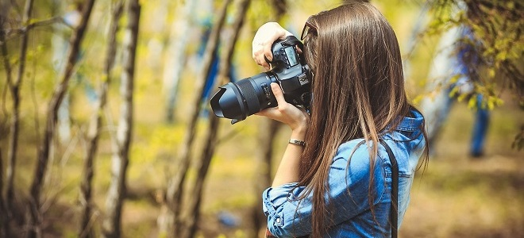

Наші поради
Як стати фотографом
Фотограф, на думку багатьох, модна і прибуткова професія. Але більшість людей впевнені, що стати професіоналом у цій галузі складно і витратно. Проте стати фотографом цілком можна за допомогою самонавчання.
Насамперед, варто вивчити досвід інших людей: почитати в інтернеті розповіді тих, хто починав з аматорських фотографій і зумів стати відомою людиною. Дізнайтеся, які можливі труднощі вас чекають, ще раз зважте власні шанси, остаточно позбудьтеся ілюзій і сумнівів. Вивчіть теорію: прийоми, методику зйомки, види, техніки і т. п.

-
Проводьте зйомку таким чином, щоб фотокамера знаходилася на одному рівні з об'єктом зйомки, так би мовити - очі в очі акої позиції у першу вимагає зйомка дітей та тварин. Якщо проводити зйомку зверху, то ракурс буде зовсім іншим, а також з'являються непотрібні спотворення. Але якщо ви задумали спеціально проводити зйомку зверху, то це зовсім інша справа.
-
Кадр можна зробити цікавим за допомогою чогось, що зможе доповнити основний об'єкт зйомки. Це може бути вікно, гілка дерева або куща, перила або сходи. Такі доповнення зможуть створити перспективу і додатковий обсяг у кадрі.
-
По можливості намагайтеся проводити зйомку при природному освітленні, тобто на відкритому повітрі, а не в приміщеннях. Але не завжди виходить так, що ми можемо проводити зйомку там, де хочемо. І якщо у вас є можливість повторити зйомку кадру при природному освітленні, то намагайтеся не упустити такої можливості.